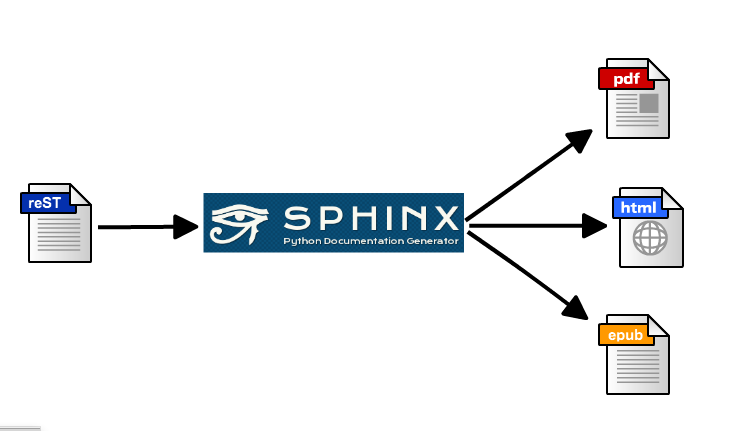

$ virtualenv --distribute env
$ source env/bin activate
$ mkdir sample-doc
$ cd sample-doc
$ pip install Sphinx
$ sphinx-quickstart
# 対話形式でSphinxのプロジェクト設定を行う
$ make html
sample docment
./
├── Makefile
├── _build
├── _static
├── _templates
├── conf.py
├── index.rst
└── make.bat
.. sample documentation master file, created by
sphinx-quickstart on Tue Sep 10 18:28:57 2013.
You can adapt this file completely to your liking, but it should at least
contain the root `toctree` directive.
Welcome to sample's documentation!
==================================
Contents:
.. toctree::
:maxdepth: 2
Indices and tables
==================
* :ref:`genindex`
* :ref:`modindex`
* :ref:`search`
pdf, latex, epub, ..etc

$ make latexpdf
conf.py
# The theme to use for HTML and HTML Help pages. See the documentation for
# a list of builtin themes.
html_theme = 'nature'
build
$ make html
_stacic/override_nature.css
@import url(https://fonts.googleapis.com/css?family=Ubuntu);
div.body {
font-family: Ubuntu, Arial, sans-serif;
background-color: #dcd8d6;
}
div.related {
background-color: #e46d3d;
}
div.body h1 {
border-top: 20px solid #dcd8d6;
}
div.body h1, div.body h2, div.body h3, div.body h4, div.body h5, div.body h6 {
font-family: Ubuntu, Arial, sans-serif;
background-color: #c1b3ad;
}
conf.py
def setup(app):
app.add_stylesheet('override_nature.css')
conf.py
def setup(app):
app.add_javascript('other.js')
save theme files to local
_theme/flask
conf.py
sys.path.append(os.path.abspath('_theme'))
html_theme_path = ['_theme']
html_theme = 'flask'
sphinxjp.themecore 0.1.3
sphinxjp theme list
install
$ pip install sphinxjp.themes.bizstyle
conf.py
extensions += ['sphinxjp.themecore']
html_theme = 'bizstyle'
sphinxjp.themes.bizstyle
default/
├── layout.html
├── static
│ ├── default.css_t
│ └── sidebar.js_t
└── theme.conf
defaultテーマのファイルレイアウト
[theme]
inherit = basic # <= どのテーマを継承するか
stylesheet = default.css # <= どのスタイルシートを利用するか
pygments_style = sphinx # <= ソースコードハイライトのスタイル
[options] # <= テーマ固有のオプション
rightsidebar = false
stickysidebar = false
collapsiblesidebar = false
externalrefs = false
.
.
{#
default/layout.html
~~~~~~~~~~~~~~~~~~~
Sphinx layout template for the default theme.
:copyright: Copyright 2007-2013 by the Sphinx team, see AUTHORS.
:license: BSD, see LICENSE for details.
#}
{%- extends "basic/layout.html" %}
{% if theme_collapsiblesidebar|tobool %}
{% set script_files = script_files + ['_static/sidebar.js'] %}
{% endif %}
テンプレートにはJinja2を採用
theme.conf
collapsiblesidebar = true
layout.html
{% if theme_collapsiblesidebar|tobool %} # => True
conf.py
html_theme_options = {
'collapsiblesidebar': True,
}
利用者が任意に変更できるオプションを追加できる
body {
font-family: {{ theme_bodyfont }}; <= option
font-size: 100%;
background-color: {{ theme_footerbgcolor }}; <= option
color: #000;
margin: 0;
padding: 0;
}
_tを付ける事でHTML同様Jinja2経由で処理される。
conf.py
# 拡張を宣言する
extensions += ['sphinx.ext.todo']
# TODOを表示させる(デフォはFalse)
todo_include_todos = True
index.rst
.. todo::
あとで本気だす！
.. todo::
俺はあとでやるぞジョジョー!
.. todolist::
todo
todolist
.. ディレクティブ名:: 引数 ...
:オプション: 値
ディレクティブのコンテンツ
ブロック内の文章
.. revealjs:: sphinxjp.themes.revealjs
:data-background: _static/image/background.png
ブロック内の文章
class revealjs(nodes.General, nodes.Element): pass
class RevealjsDirective(Directive):
""" Reveal.JS slide entry """
node_class = revealjs
def run(self):
""" build revealjs node """
# 省略〜
node = self.node_class(text, **self.options)
return [node]
def visit_revealjs(self, node):
""" build start tag for revealjs """
# 省略 〜
self.body.append(self.starttag(node, 'section', **section_attr))
def depart_revealjs(self, node=None):
""" build end tag for revealjs """
self.body.append('＜/section＞\n')
def setup(app):
"""Initialize """
app.info('Initializing RevealJS theme directives')
app.add_node(revealjs, html=(visit_revealjs, depart_revealjs))
:ロール名:`コンテンツ`
Pythonのコーディングスタイルは :pep:`8` に従いましょう
Pythonのコーディングスタイルは
PEP 8
に従いましょう
Roleを使う時は両端にスペースを必須
× Pythonのコーディングスタイルは:pep:`8`に従いましょう
○ Pythonのコーディングスタイルは :pep:`8` に従いましょう
install
$ pip install watchdog
watchmedo
$ watchmedo shell-command --recursive --patterns="*.rst" --wait --command='make html'
project
├── apps
├── docs
│ ├── Makefile
│ ├── _build
│ ├── _static
│ ├── _templates
│ ├── conf.py
│ ├── index.rst
│ └── make.bat
├── manage.py
├── polls
└── requirementxs.tt
conf.py
extensions += ['sphinx.ext.autodoc']
polls/models.py
from django.db import models
class Poll(models.Model):
question = models.CharField(max_length=200)
pub_date = models.DateTimeField('date published')
class Choice(models.Model):
poll = models.ForeignKey(Poll)
choice = models.CharField(max_length=200)
votes = models.IntegerField()
.. automodule:: polls.models
:members:
:undoc-members:
:show-inheritance:
$ sphinx-apidoc -f -T -o docs/api polls
$ pip install schema2rst
config.yaml
db: 'polls'
host: '127.0.0.1'
user: 'user'
passwd: 'password'
port: '3306'
$ schema2rst config.yaml > docs/schema.rst
polls_poll
----------
.. list-table::
:header-rows: 1
* - Fullname
- Name
- Type
- NOT NULL
- PKey
- Default
- Comment
* - id
- id
- int(11)
- False
今日発売! ＼(^o^)／
{kind=link}